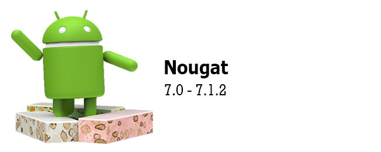
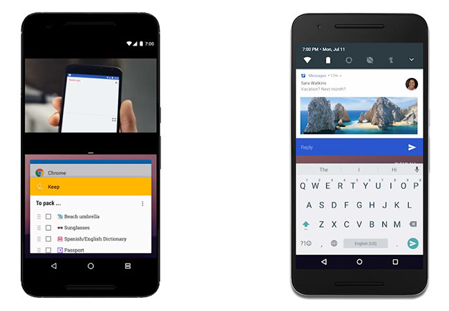
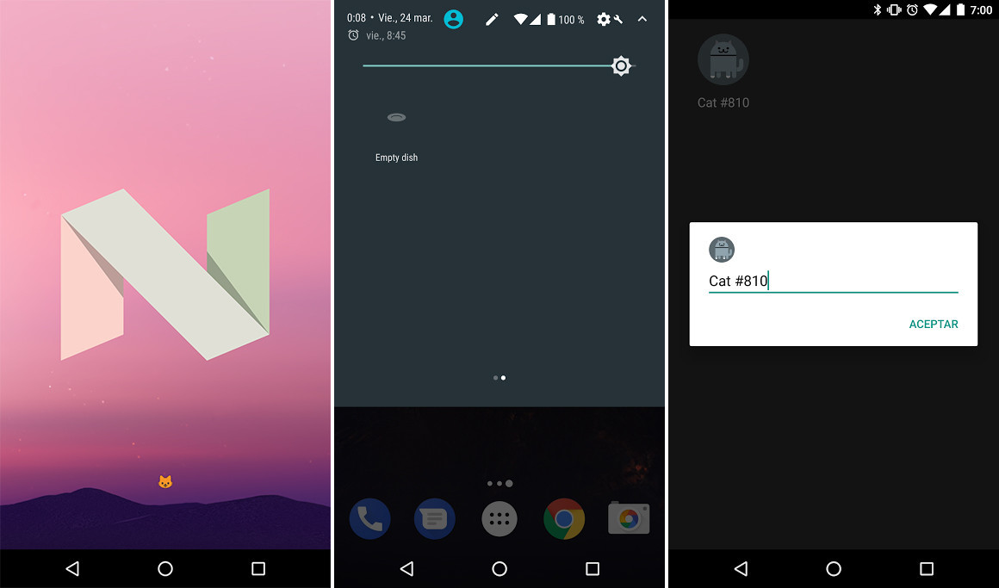

Android 7.0 Nougat

Android Nougat sigue los pasos de Marshmallow refinando pequeños elementos heredados que necesitaban atención. El mercado de móviles Android se ha vuelto muy exigente y Android debe estar a la altura.

En cuanto al rendimiento, Nougat mejora el Doze de Marshmallow, haciéndolo efectivo incluso cuando el teléfono está en movimiento. Además, el nuevo compilador JIT reduce en un 75% la instalación de una aplicación y requiere de menos almacenamiento.
Llegan la respuesta rápida, directamente desde la notificación de Android, la plataforma VR Daydream, el modo multiventana, el soporte Picture-in-Picture (solo en Android TV) y los gráficos de consola con Vulkan 3D.
Android Nougat permite que aplicaciones de terceros añadan botones a los ajustes rápidos, y lo demuestra con su propio huevo de pascua. Llega también Unicode 9.0 y los emojis con distintos tonos de piel, la calibración de color para la pantalla, las actualizaciones del sistema seamless, el nuevo modo de ahorro de datos y la posibilidad de elegir varios idiomas conocidos.
Varias de las novedades de Android Nougat son exclusivas en cierto modo para los teléfonos Pixel, pues oficialmente solo están disponibles con su lanzador oficial. Es el caso de los accesos directos con una pulsación prolongada o la luz nocturna.
